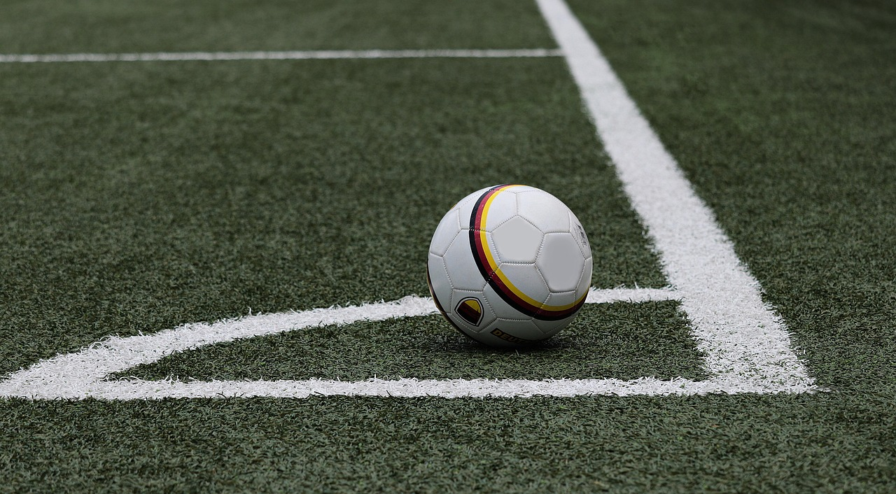

soccer website
内容をこれからから書きます
ルール
サッカーの基本的なルールは、11人に分かれた2つのチームが一つのボールを使って新貝のゴールにけり入れるスポーツです。
基本的なルール
- 1チーム11人:
主にDF（ディフェンダー）、MF（ミッドフィルダー）、FW（フォワード）、GK（ゴールキーパー）というポジションに分けられています。
- スローイン:
ボールをサイドラインから出してしまったら出していないチームのスローインで再開されます。
- ゴールキック:
攻撃側のチームが守備側のゴールラインの外へボールを出した時には、ゴールエリア内からの守備側のキックによってプレーが再開されます。
- コーナーキック:
守備側が最後に触れたボールが、守備側のゴールラインから外へでた場合、攻撃側によるコーナーエリアと呼ばれる地点からのキックでプレーが再開されます。
- 試合時間:
基本的に前半45分、後半45分となっています。またファウルなどで試合が中断された場合には、その時間を考慮したアディショナルタイムが追加されることになっています。
反則
- フリーキック:
相手チームのプレイヤーによって押されたり蹴られたりしてファウルをもらった場合や、相手チームにハンドがあった場合やオフサイドがあった場合にはフリーキックで試合が再開されます。
- ペナルティーキック:
ペナルティーエリア内で守備側が直接フリーキックに相当する反則を犯した場合、攻撃側に与えられます。
- イエローカード:
イエローカードは、悪質なファウルや反則行為を行った選手に対して、審判が警告を発するときに用いられるものです。1試合に2枚以上のイエローカードを受け取ると、レッドカードと同様の扱いになります。
- レッドカード:
レッドカードは、一定の反則を犯した選手に対し、審判が退場処分を示すために用います。特に悪質な反則行為をした場合には、1回の行為でもレッドカードが出されることがあります。
- オフサイド:
簡単に言ったらゴール前での待ち伏せ禁止というルールです。
魅力
サッカーの魅力は、技術や戦術もありますが教育的要素ともなる発想力、規律、自己責任、忍耐、語学などたくさんあります。仲間とともに協力をしながらこれらの要素を高めていくことは人によってはとても楽しく思うでしょう。興味がある人はぜひプレーしてみましょう。